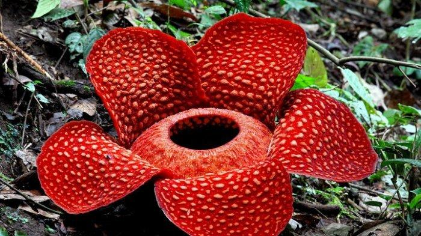

Bandung,Cirebon,Garut

Nama anggota mapel ips
-Arletta Putri Yansena/5
-Felicia Destriana Ardiyanto/9
-Laura Defia Angelina/13
MAKANAN KHAS DARI KABUPATEN BANDUNG,CIREBON,GARUT
Makanan Karedok khas Bandung
Bandung

Makanan Karedok
Makanan tersebut adalah makanan khas sunda yang berbahan dasar sayuran yang disiram dengan bumbu kacang
Makanan Tahu Gejrot khas Cirebon
Cirebon


Makanan Tahu Gejrot
Tahu gejrot terdiri dari tahu yang sudah digoreng kemudian dipotong agak kecil lalu dimakan dengan kuah yang bumbunya terdiri dari cabai, bawang putih, bawang merah, dan gula. Biasanya disajikan di layah kecil.
Makanan Dodol Khas Garut
Garut
Makanan Dodol
Dodol merupakan salah satu jenis produk olahan hasil pertanian yang bersifat semi basah, berwarna putih sampai coklat, dibuat dari campuran tepung ketan, gula, dan santan dengan atau tanpa bahan pengawet.
FLORA FAUNA JAWA BARAT
Fauna Jawa Barat
surili
Fauna Surili
Surili jawa adalah spesies monyet Dunia Lama terancam yang endemik pada sebagian pulau Jawa, Indonesia. Hewan ini menyukai hutan primer dan penghuni pohon. Terdapat dua subspesies surili jawa: Presbytis comata comata yang ditemukan di Jawa Barat dan Presbytis comata fredericae yang menghuni hutan Jawa Tengah.
Flora Jawa Barat
Raflesia Arnoldi

Flora Raflesia Arnoldi
Padma raksasa adalah tumbuhan parasit obligat yang terkenal karena memiliki bunga berukuran sangat besar, bahkan merupakan bunga terbesar di dunia ke-1. Bunga Rafflesia dikatakan bunga yang unik karena hanya berupa bunga mekar tanpa daun, akar dan tidak memiliki batang.
MATA PENCAHARIAN KABUPATEN BANDUNG, CIREBON,GARUT
Mata Pencaharian kabupaten Bandung
Bandung
Mata Pencaharian Bandung
Mayoritas masyarakat Sunda/Bandung berprofesi sebagai petani dan berladang, ini disebabkan tanah sunda/bandung yang subur
Mata Pencaharian kabupaten Garut
Garut
Mata Pencaharian Garut
penduduk di kabupaten Garut sangat di dominasi oleh sektor pertanian karena potensi lahan yang luas dan subur
Mata Pencaharian Kabupaten Cirebon
Cirebon
Mata Pencaharian Cirebon
Masyarakat Cirebon rata-rata bermata pencaharian sebagai nelayan,Pedagang/Pengusaha karena Cirebon termasuk kota yang cukup besar